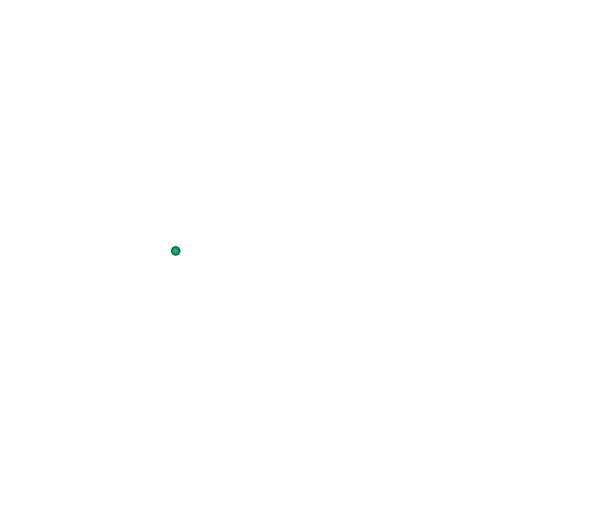
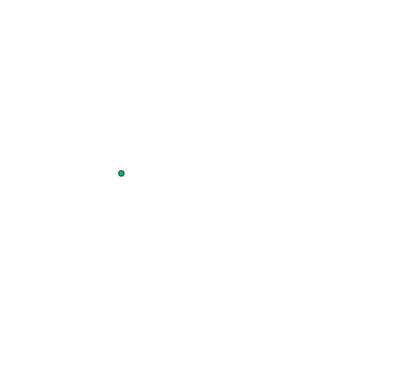

Волос


 



Βόλος
Γενικές πληροφορίες:
- Χώρα: Ελλάδα
- Έκταση: 27,68 τ.χλμ.
- Πληθυσμός: 86 046 (2011)
- Περιφέρεια: Θεσσαλίας
Ένας μυθικός προορισμός
Ο Βόλος, μία από τις μεγαλύτερες ελληνικές πόλεις και ένα από τα σημαντικότερα λιμάνια της χώρας, βρίσκεται στο κέντρο της Ελλάδας (320 χλμ. Β της Αθήνας και 219 χλμ. Ν της Θεσσαλονίκης). Κτισμένος στον μυχό του Παγασητικού κόλπου και σε απόσταση αναπνοής από το βουνό του Πηλίου, συνδυάζει όλη τη γοητεία της θάλασσας με τη μυστηριακή ομορφιά του βουνού των Κενταύρων. Η όμορφη πόλη συνδέεται με την περίφημη Αργοναυτική Εκστρατεία, ένα από τα σημαντικότερα έπη του ελληνικού μυθολογικού κύκλου.
Το κόσμημα του Παγασητικού
Ο Βόλος είναι μία από τις ομορφότερες πόλεις της ελληνικής επικράτειας. Ο πλούτος της περιοχής και η μεγάλη του ιστορία αποτυπώνονται στην αρχιτεκτονική δομή της πόλης, που αποπνέει αυτοπεποίθηση και αρχοντιά. Τα πολλά αρχοντικά, τα δημόσια μέγαρα, μουσεία βιομηχανικές εγκαταστάσεις των αρχών του 20ου αιώνα και οι ιστορικές εκκλησίες κάνουν την περιήγηση στον Βόλο πραγματικά απολαυστική. Η θάλασσα δημιουργεί ένα υπέροχο παραλιακό μέτωπο με γραφικά μαγαζιά, ανάμεσά τους και τα περίφημα τσιπουράδικα, όπου θα απολαύσετε το παραδοσιακό τσίπουρο και ξεχωριστούς θαλασσινούς μεζέδες. Η πεζοδρομημένη παραλιακή λεωφόρος Αργοναυτών και το επιβατικό λιμάνι στο δυτικό άκρο της, με την εκπληκτική θέα προς το ανοικτό πέλαγος, είναι το δημοφιλέστερα σημεία συνάντησης και περιπάτου για τους κατοίκους και τους επισκέπτες της πόλης.
Διαδρομές & βήματα:Από τον Βόλο ξεκινάει το ταξίδι
- Την πεζοδρομημένη λεωφόρο Αργοναυτών, στην οποία ξεχωρίζουν η «Αργώ» (στο λιμάνι), έργο του γλύπτη Νικόλα και «σήμα κατατεθέν» της πόλης, αλλά και το σκαρί της σύγχρονης Αργούς (κατασκευασμένο κατ’ εικόνα του αρχαίου), ένα σπουδαίο ναυπηγικό επίτευγμα, που γεμίζει με συγκίνηση τους ρέκτες της ιστορίας.
- Το πανέμορφο κτίριο Παπαστράτου (1926) με την ιδιαίτερη αρχιτεκτονική, που σήμερα φιλοξενεί υπηρεσίες και σχολές του Πανεπιστημίου Θεσσαλίας.
- Τη συνοικία «Παλιά» στον δυτικό τομέα του Βόλου – υπολογίζεται πως κατοικείται διαρκώς από το 3.000 π.Χ., ενώ σύμφωνα με μια εκδοχή ταυτίζεται με την αρχαία Ιωλκό – για να θαυμάσετε τα ρωμαϊκά λουτρά, τα ερείπια του κάστρου (μέσα 6ου αι. μ.Χ.), την οθωμανική πυριτιδαποθήκη (1600), την πλατεία Αγίων Θεοδώρων και το πρώην εργοστάσιο Τσαλαπάτα (1925), που σήμερα στεγάζει το Μουσείο Πλινθοκεραμοποιίας.
- Την δενροσκεπή πλατεία Ρήγα Φεραίου - την μεγαλύτερη της πόλης - με το εντυπωσιακό Δημαρχείο και το κτίριο του Δημοτικού θεάτρου με τη μεγαλύτερη σκηνή των Βαλκανίων.
- Το μεγάλο πάρκο του Αγίου Κωνσταντίνου με την ομώνυμη εκκλησία (έργο του σημαντικού αρχιτέκτονα Αρ. Ζάχου, 1936) και το πάρκο Αναύρου με την υπαίθρια γλυπτοθήκη.
- Το κινηματοθέατρο Αχίλλειο (1925)σε σχέδια του αρχιτέκτονα Κ. Αργύρη.
- Τον κατάφυτο λόφο Γορίτσας με την ομώνυμη εκκλησιά της Παναγιάς (1892)στην κορυφή για μια πανοραμική θέα της πόλης και την Παναγιά της Τρύπας, χτισμένη σε σπηλιά, δίπλα στη θάλασσα.
Λίγα χλμ. δυτικά της πόλης, βρίσκονται οι αρχαιολογικοί χώροι του Σέσκλου (ο οικισμός χρονολογείται στο 6.000 π.Χ και είναι ο αρχαιότερος της Ευρώπης)και του Διμηνίου, που είναι ο πιο γνωστός προϊστορικός οικισμός της Ελλάδας και ο σημαντικότερος της νεώτερης Νεολιθικής Περιόδου. Προς τα βόρεια και ανατολικά, αναπτύσσεται ο επιβλητικός ορεινός όγκος του Πηλίου, του μυθικού βουνού των θρύλων και των Κενταύρων, από τα ομορφότερα και γοητευτικότερα της Ελλάδας. Στο βουνό υπάρχουν δεκάδες ξακουστά παραδοσιακά χωριά κτισμένα με τη μοναδική πηλιορείτικη αρχιτεκτονική (τα περισσότερα από τον 15ο-16ο αι.), ενώ κοντά στο χωριό Χάνια λειτουργεί σύγχρονο χιονοδρομικό κέντρο. Αξέχαστη εμπειρία αποτελεί η διαδρομή που ακολουθεί ο θρυλικός «μουτζούρης», το ατμήλατο τραίνο του Πηλίου, (λειτουργεί, με διαλείμματα, από το 1895 και συνδέει το χωριό Λεχώνια, κοντά στη θάλασσα, με το κεφαλοχώρι Μηλιές, σε υψόμετρο 400 μ.). Η πανέμορφη διαδρομή δίνει την ευκαιρία στους επιβάτες να απολαύσουν το εντυπωσιακό τοπίο του βουνού, τη θέα στη θάλασσα και τα υπέροχα ορεινά χωριά. Σημειώνεται, ακόμα, ότι σε πολλές περιοχές του Πηλίου πραγματοποιούνται οργανωμένα προγράμματα εναλλακτικού τουρισμού (ιππασία, πεζοπορία, οικοτουριστικές διαδρομές κ.α.).
Τους καλοκαιρινούς μήνες θα σας κερδίσουν με τα θέλγητρά τους δεκάδες μαγευτικές παραλίες- πολλές από τις οποίες έχουν βραβευθεί με Γαλάζιες Σημαίες - στον Παγασητικό Κόλπο ή προς την πλευρά του Αιγαίου πελάγους, ενώ πλοία σας μεταφέρουν στα νησιά Σκιάθος, Σκόπελος και Αλόννησος για μια ολοήμερη απόδραση.
Волос
Основная информация:- Страна: Греция
- Площадь: 27,68 кв.км.
- Население: 86 046 (2011)
- Регион: Фессалия
Мифическое место назначения
Волос, один из крупнейших греческих городов и один из важнейших портов страны, расположен в центре Греции (320 км. от Афин и 219 км. от города Салоники). Построенный на краю Пагасетского залива и в двух шагах от горы Пелион, он сочетает в себе всё очарование моря с мистической красотой горы Кентавров. Прекрасный город связан со знаменитой Аргонавтической экспедицией, одним из важнейших эпосов греческого мифологического цикла.
Жемчужина залива Пагаситикос
Волос - один из самых красивых городов на территории Греции. Богатство этого района и его великая история отражены в архитектурной структуре города, которая излучает уверенность и благородство. Многочисленные виллы, общественные особняки, музеи, промышленные объекты начала 20 века и исторические церкви делают экскурсию по Волосу по-настоящему приятной. Море создаёт прекрасную прибрежную полосу с живописными магазинами, среди которых знаменитая Ципурадика (таверна, где угощают национальным фруктовым алкогольным напитком "ципуро"), где вы сможете насладиться традиционным ципуро и особыми деликатесами из морепродуктов. Пешеходная прибрежная авеню Аргонавтов и пассажирский порт на её западном конце с потрясающим видом на открытое море являются самыми популярными местами встреч и прогулок для жителей и гостей города.
Маршруты и шаги:- Пешеходная аллея Аргонавтов, на которой выделяется "Арго" (в порту), работа скульптора Николая и "торговая марка" города, но также и ремесло современного Аргоса (выполненное по образу древнего), великое судостроительное достижение, которое наполняет эмоциями страницы истории.
- Красивое здание Папастратоса (1926) с его особой архитектурой, в котором сегодня размещаются службы и школы Фессалийского университета.
- "Старый" район в западном секторе Волоса - по оценкам, постоянно населённый от около 3000 человеками, в то время как по одной из версий отождествляется с древним городом Иолк – полюбоваться римскими банями, руинами замка (середина 6 века), османская пороховая бочка (1600), площадь Агии Теодорои и бывшая фабрика Цалапата (1925), в которой сейчас находится Музей кирпичной кладки.
- Рижская площадь Фераю - самая большая в городе - с впечатляющей ратушей и зданием Муниципального театра с самой большой сценой на Балканах.
- Большой парк Агиос Константинос с одноименной церковью (работа выдающегося архитектора Ар. Захос, 1936) и парк Анаврос с его галереей скульптур под открытым небом.
- Кинотеатр "Ахиллион" (1925), спроектированный архитектором К. Аргирисом.
- Зелёный холм Горица с одноименной церковью Панагии (1892) на вершине, откуда открывается панорамный вид на город и на церковь Панагия Трипинская, построенная в пещере, рядом с морем.
В нескольких милях к западу от города находятся археологические памятники Сескло (поселение датируется 6000 г. до н.э. и является старейшим в Европе) и Бимоний, который является самым известным доисторическим поселением Греции и самым важным из позднего неолита. На севере и востоке возвышается внушительный массив Пелион, мифическая гора Легенд и Кентавров, одна из самых красивых и очаровательных в Греции. На горе находятся десятки знаменитых традиционных деревень, построенных с уникальной архитектурой Пелиона (большинство из них 15-16 века), в то время как недалеко от деревни Ханья действует современный горнолыжный курорт. Незабываемый опыт - это маршрут, по которому следует легендарный "Муцурис", паровоз Пелиона (работает с перерывами с 1895 года и соединяет деревню Лечония, недалеко от моря, с деревней Милиес, на высоте 400 м.). Красивый маршрут даёт пассажирам возможность насладиться захватывающими горными пейзажами, видом на море и прекрасными горными деревнями. Также отмечается, что во многих районах Пелиона организованы программы альтернативного туризма (верховая езда, пешие походы, экотуристические маршруты и т.д.).
В летние месяцы вас привлекут десятки великолепных пляжей - многие из которых были награждены Голубым флагом (международная награда, ежегодно вручаемая с 1987 года пляжам и причалам, вода в которых отвечает высоким стандартам качества) - в заливе Пагасетик или на берегу Эгейского моря, в то время как корабли доставят вас на острова Скиатос, Скопелос и Алониссос для отдыха в течение всего дня.